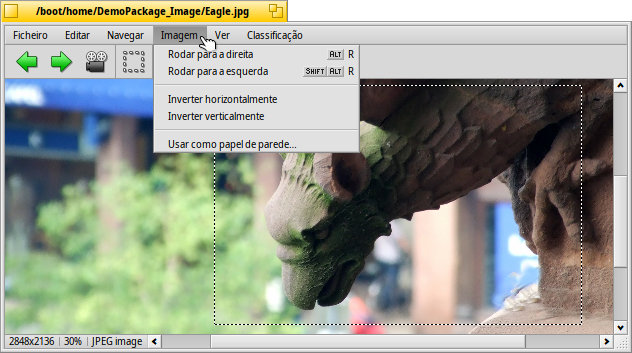

Português (Brazil)
Português (Brazil) Català
Català Deutsch
Deutsch English
English Español
Español Français
Français Italiano
Italiano Magyar
Magyar Polski
Polski Português
Português Română
Română Slovenčina
Slovenčina Suomi
Suomi Svenska
Svenska 中文 ［中文］
中文 ［中文］ Русский
Русский Українська
Українська 日本語
日本語 Exibir Imagem
Exibir Imagem
| Deskbar: | Sem entrada, normalmente carregado via duplo clique em um arquivo suportado. | |
| Localização: | /boot/system/apps/ShowImage | |
| Definições: | ~/config/settings/ShowImage_settings |
Exibir Imagem permite ver imagens em todos os formatos que são suportados através dos Tradutores de Dados. Novos formatos são automaticamente reconhecidos quando seu tradutor é adicionado ao sistema. Isto é feito para arquivos de ícones vetoriais do Haiku, imagens do WonderBrush ou quando imagens WebP tornam-se disponíveis, por exemplo.
Exibir Imagem proporciona funcionalidades de edição mínimas para cortas, rotacionar e inverter imagens e para salvá-las em outro formato.
 Visualização
Visualização

O menu permite iniciar um de todas as imagens em uma pasta (ou janela de resultado de consulta) e definir um de 2 a 20 segundos.
Outros comandos aplicados à imagem atualmente mostrada (sem alterar o tamanho da janela):
exibe a imagem com um fator de aproximação de 100%.
encolhe a imagem dentro do quadro da janela, isto é após ter aproximado dentro dele ou após redimensionar a janela.
e aproxima ou afasta a imagem em etapas de 10%. A aproximação também é feita com a roda do mouse; para rotacionar horizontalmente uma imagem maior do que a janela, simplesmente clique com o botão esquerdo e arraste o mouse.
Duas definições não se aplicam apenas à imagem atualmente exibida e são lembradas ao navegar de uma imagem para a próxima:
aplica um filtro muito rápido ao aproximar para reduzir linhas denteadas e produzir um resultado mais suave.
esticará imagens menores para preencher o quadro da janela atual.
E há um modo com uma opção para a qual sobrepõe o nome do arquivo na parte inferior da imagem.
Por último, irá exibir/ocultar os controles gráficos:
Da esquerda para a direita: Imagem anterior, próxima imagem, iniciar show de slides (em modo de tela cheia), modo de seleção, tamanho original, ajustar para janela, aproximar, afastar.
Muitos dos comandos mais frequentemente utilizados também estão disponíveis a partir de um menu de contexto acionado pelo clique com o botão direito do mouse sobre a imagem. Conveniente quando em modo de tela cheia.
Navegando

Após abrir uma imagem pode-se rapidamente navegar através de todas as imagens na sua pasta (ou janela de resultado de consulta) pressionando ↑/↓ ou ←/→. Pode-se ver na janela do Rastreador a seleção mudar de acordo.
Existe uma maneira rápida para abrir a pasta de uma imagem atual e então navegar pela sua principal e subpastas. Ela funciona semelhantemente à navegação de pesquisa no Rastreador pelo clique na área de informação na barra de estado que exibe tamanho e formato da imagem atual.
Olhar no menu , exibe outro tipo de navegação: Alguns formatos de imagem, como o TIFF, podem conter muita páginas em um arquivo. Comandos como e permitem navegar por aquelas páginas.
Editando

O menu oferece umas poucas manipulações de imagem necessárias para um visualizador de imagem: rotacionar e inverter a imagem. Observe, contudo, que a imaem real não será alterada. Apenas um atributo é adicionado ao arquivo, então ele será exibido rotacionado ou invertido da próxima vez que for aberto.
irá abrir as preferências do Papel de parede para definir a imagem atual como fundo de seus espaços de trabalho.
Cortar é outra funcionalidade necessária algumas vezes. Para definir o quadro para cortar, pode-se alternar para a partir do menu e arrastar uma caixa com o botão esquerdo do mouse. Se não deseja alterar os modos primeiro, pode criar esta caixa no "modo normal" simplesmente segurando CTRL enquanto arrasta com o botão esquerdo, o que de outra maneira apenas rotacionaria horizontalmente a imagem.
ou ESC removerá a caixa de seleção.
O capítulo seguinte exibe como realmente salvar uma área recortada.
Salvando e convertendo
Para salvar ou converter uma imagem em qualquer formato disponível, pode-se chamar o item normal a partir do menu , selecionar o formato e escolher um nome de arquivo.
Frequentemente mais rápido, especialmente quando a janela do Rastreador com a pasta de destino já está aberta, é usar o arrastar e soltar.

Esta é também a forma como o recorte acima mencionado é finalizado. Também selecione um quadro como descrito acima, ou escolha para a imagem inteira. Então arraste e solte a seleção na Área de Trabalho ou alguma janela do Rastreador para criar uma nova imagem do recorte no mesmo formato da imagem original.
Para salvar em outro formato de arquivo, arraste como botão direito do mouse e escolha um formato do menu de contexto quando soltar a imagem.
Atalhos de teclado
Aqui está uma lista dos atalhos mais úteis:
| ← / ↑ | Imagem anterior | |
| → / ↓ | Próxima imagem | |
| DEL | Mover para a Lixeira | |
| + | Mais zoom | |
| - | Menos zoom | |
| 0 | Tamanho original (zoom em 100%) | |
| 1 | Ajustar à janela | |
| ALT ENTER | Alternar para o modo de tela inteira (também via clique duplo) | |
| CTRL | Enquanto pressionar CTRL, você poderá criar um quadro de seleção sem explicitamente alternar para o modo de seleção. |